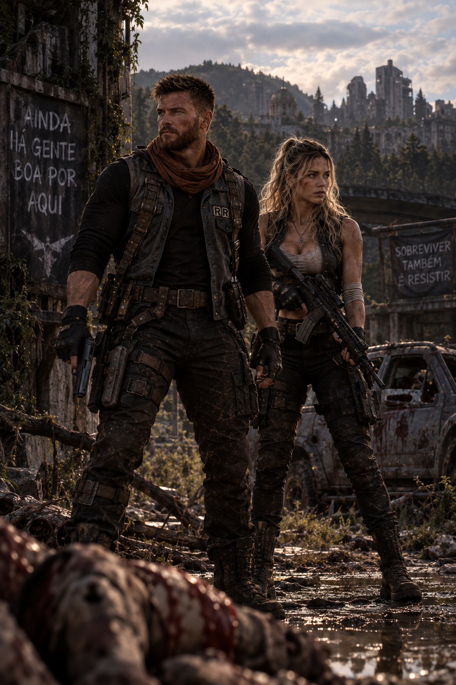
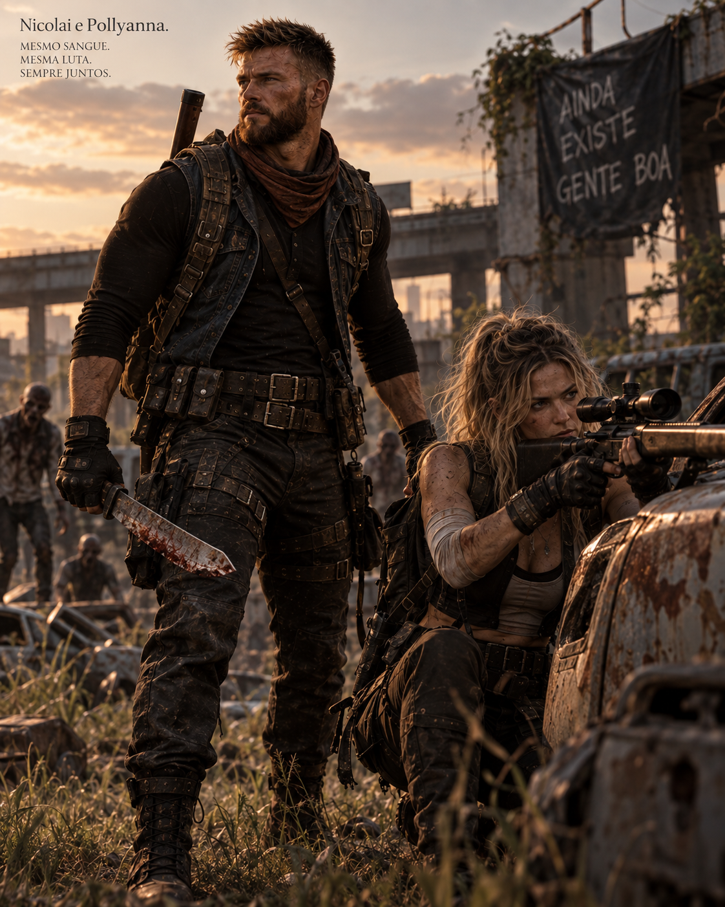
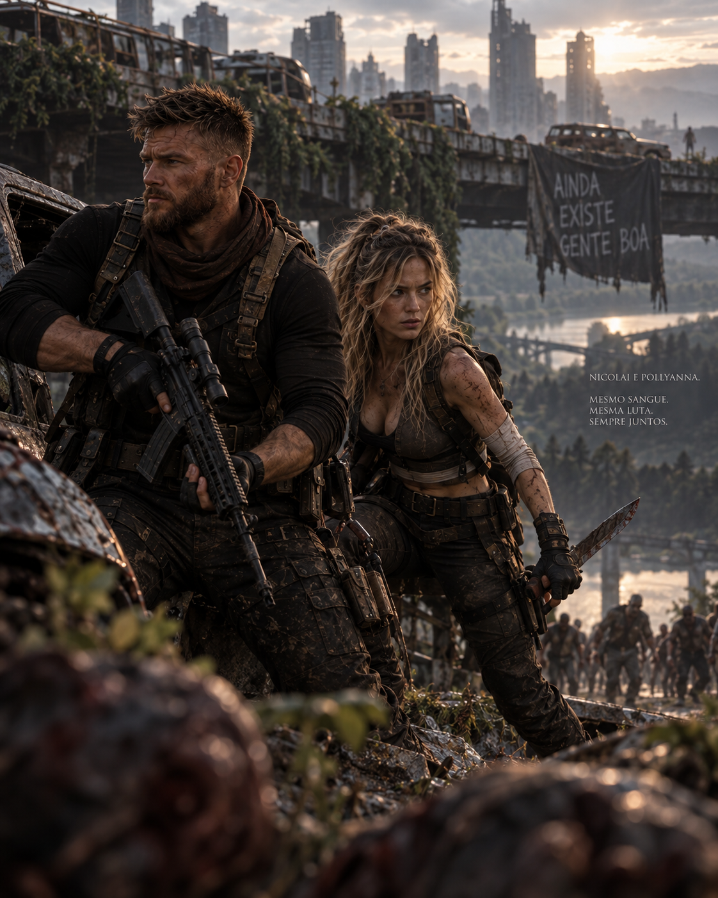
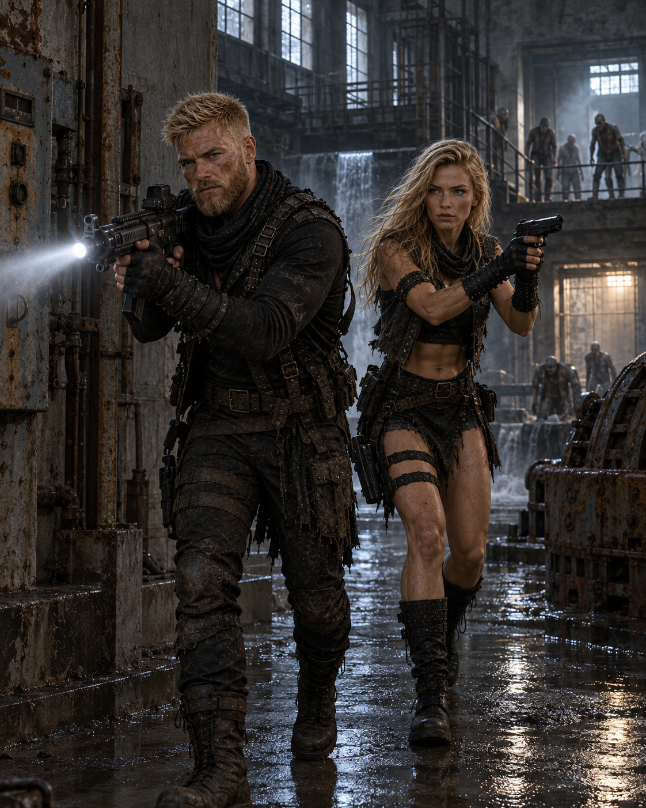
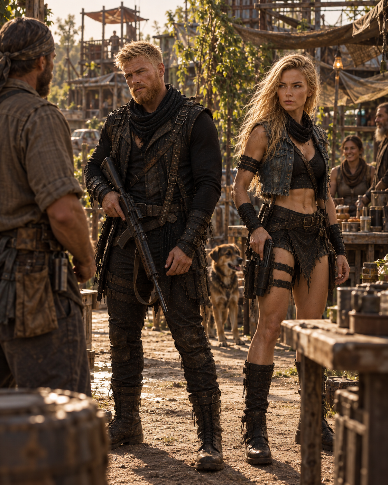
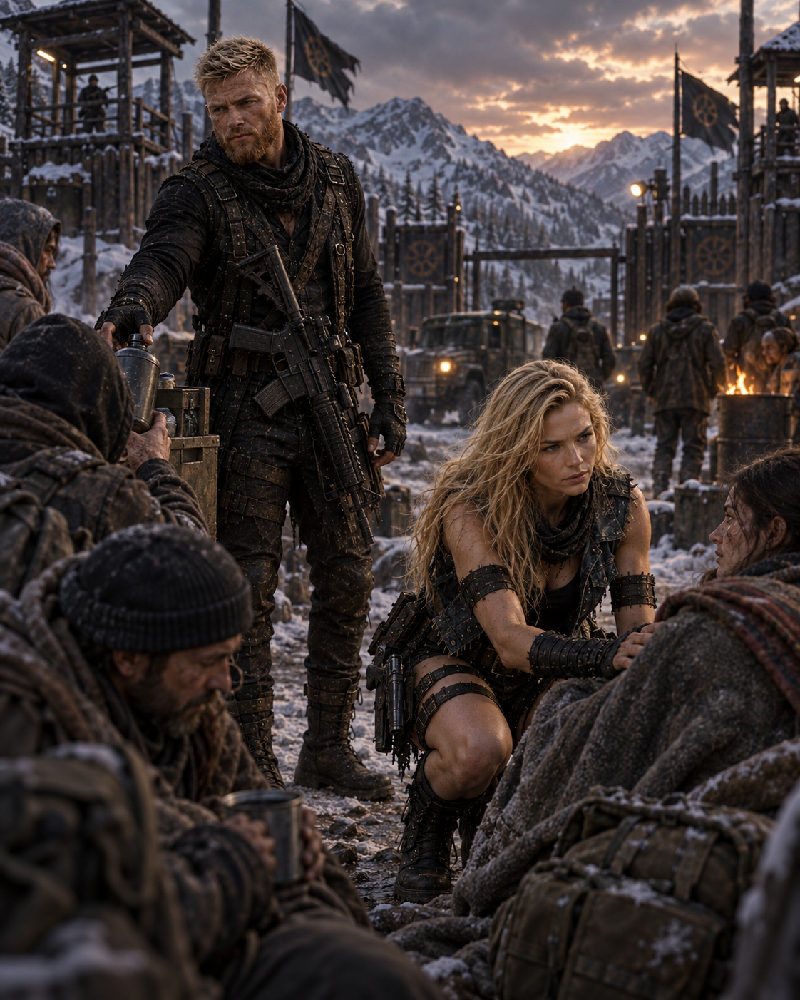
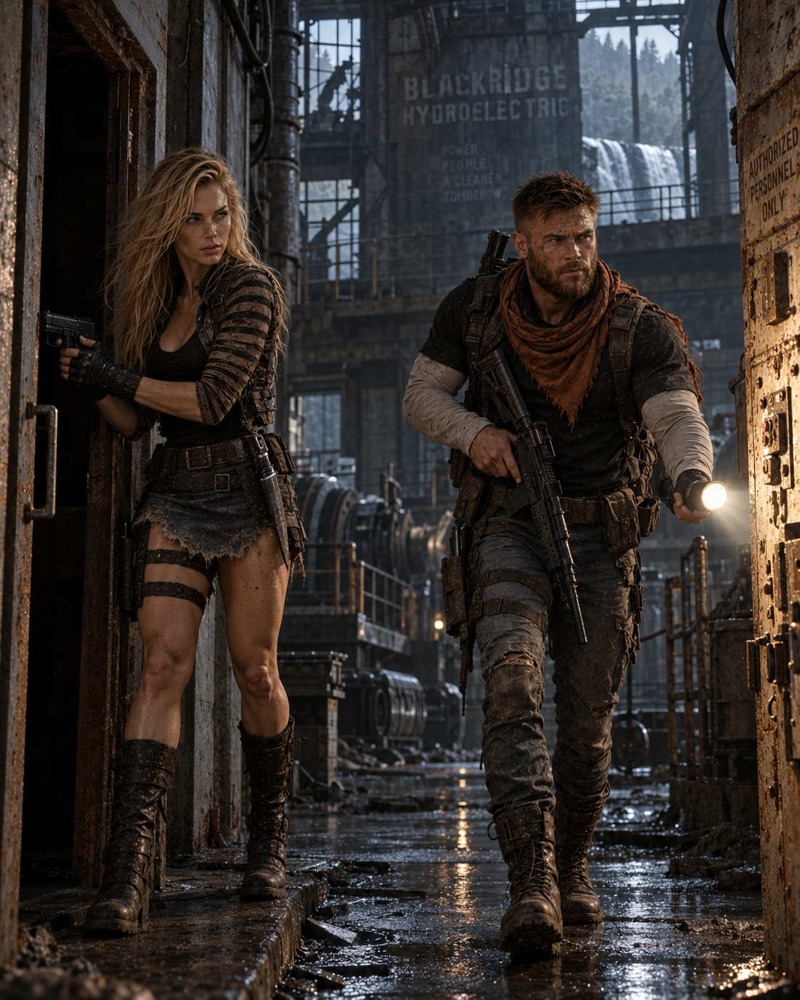
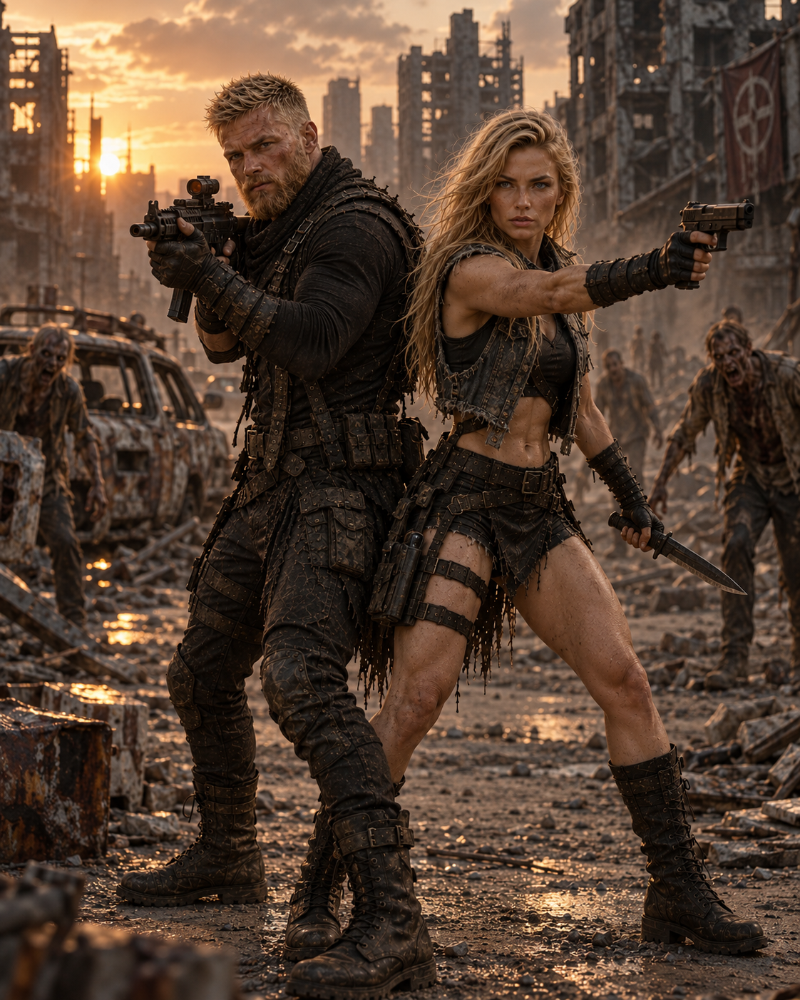

Quando um
protege o outro.








Antes de serem dois nomes separados, Pollyanna e Nathan aprenderam a sobreviver como uma única frente. Este arquivo preserva os momentos em que nenhum dos dois precisou caminhar sozinho.







